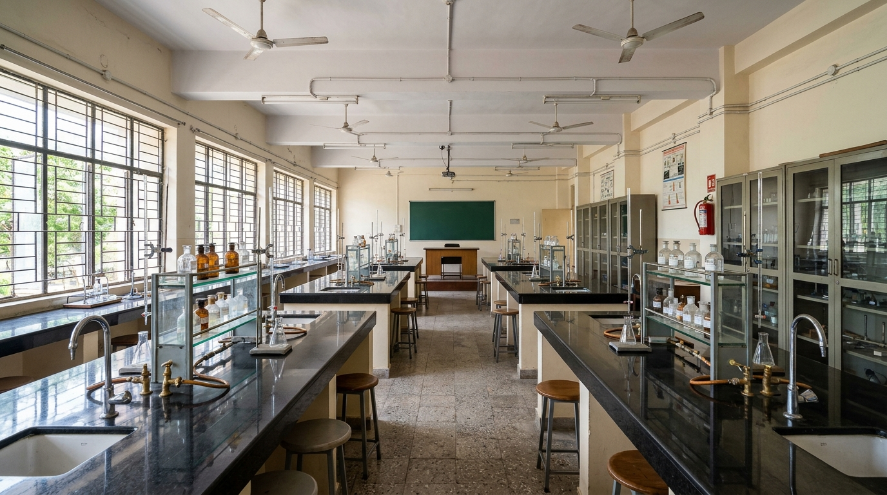

Physics Laboratory
The Physics Laboratory is designed to provide hands-on experience in calibrating measurement instruments, verifying mechanical laws, investigating optical behavior, and building electrical circuits.
Illustrative Practical Activities:
- Precision Measurements: Utilizing vernier calipers, screw gauges, and spherometers for dimensional analysis.
- Mechanics Experiments: Calculating 'g' via simple pendulums, verifying parallelogram law of forces, and spring constants.
- Optics Bench Trials: Determining focal length of convex lenses, concave mirrors, and refractive indices of prisms.
- Electricity & Magnetism: Verification of Ohm's law, meter bridge resistance comparison, and potentiometer calibration.
- Electronics Demonstrations: Characteristic curves of semiconductor diodes and Zener diode voltage regulation.
Key Competencies Developed:
Observational precision, error estimation, graphical plotting, and instrument calibration.
Chemistry Laboratory
The Chemistry Laboratory provides a secure, well-ventilated practical environment where students conduct quantitative volumetric titrations, qualitative inorganic salt tests, and organic functional group identification.
Illustrative Practical Activities:
- Volumetric Titration: Acid-base neutralization and redox titrations (e.g., standard KMnO4 against oxalic acid and Mohr's salt).
- Systematic Salt Analysis: Detection of basic and acidic radicals through systematic group precipitation and flame tests.
- Organic Identification: Test tube tests for functional groups (alcohols, aldehydes, ketones, and carboxylic acids).
- Thermochemistry Experiments: Measuring enthalpy of neutralization and enthalpy of solution.
- Safety Protocols: Proper chemical handling, reagent neutralization, and fume exhaust procedures.
Key Competencies Developed:
Meticulous burette reading, stoichiometry calculations, qualitative observation, and lab safety compliance.


Mathematics Learning Laboratory
Mathematics becomes intuitive when abstract symbols are visualized. Our Mathematics Learning Laboratory provides physical 3D geometric models, graphing apparatus, and interactive demonstration kits.
Illustrative Practical Activities:
- Conic Section Exploration: Physical cross-sections of 3D cones illustrating parabolas, ellipses, and hyperbolas.
- Calculus Curve Tracing: Tangent demonstrations, curvature inflection points, and limit approximations.
- 3D Coordinate Geometry: Octant models and direction cosine frames aiding spatial visualization.
- Trigonometric Identity Models: Dynamic unit circle frames illustrating phase shifts and periodic values.
- Probability Simulators: Combinatorial counters and random distribution experimental boards.
Key Competencies Developed:
Spatial reasoning, geometric visualization, and deductive intuition for complex calculus problems.
MEET OUR EXPERIENCED ACADEMIC MENTORS
Our educators guide students through theory and practical investigations with disciplined mentorship.